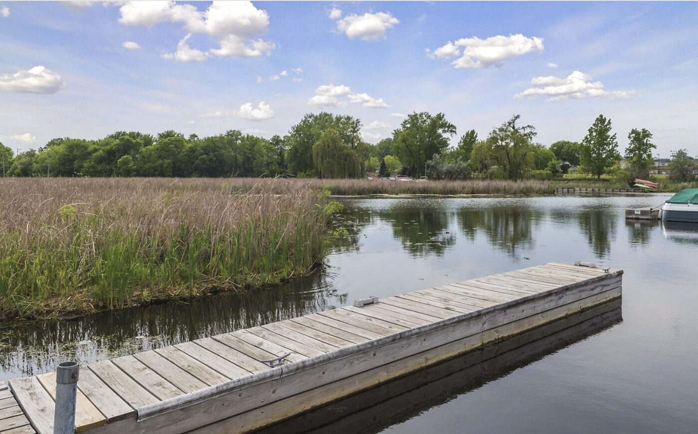
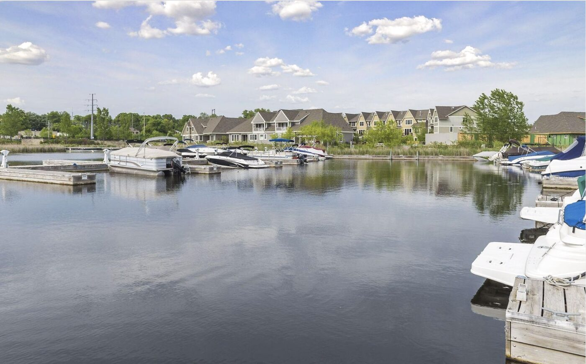
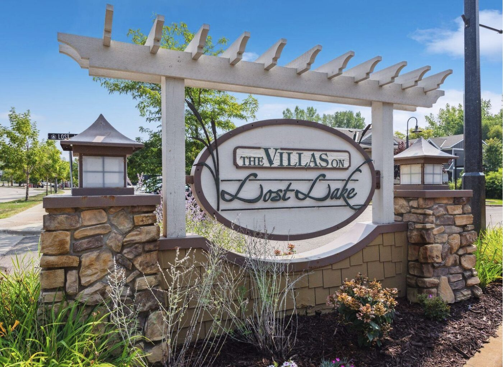

The short version
If you own a townhome in The Villas on Lost Lake and you hold a city dock slip, you are paying roughly $1,500 a year to keep a boat on Lake Minnetonka.
The cheapest slip rental anywhere else on that lake starts around $1,700 a year, for a small fishing boat. In front of the restaurants on Wayzata Bay, a 40-foot boat can cost $10,000 a season. Slips and dock rights on Minnetonka have changed hands for $40,000 to $125,000. Boaters have a name for this lake: the most expensive place in America to keep a boat, per foot.
Your slip costs less than the cheapest rental on the water.
The slip can transfer with the sale of the townhome, if it is handled properly at closing. But it has to be renewed every year. Miss a renewal, and it is gone — it goes to the next name on the city’s waiting list. The unit you own is then a townhome near the water instead of a townhome on it. Two identical units, one with a slip and one without, are not the same asset.
Most people don’t learn this until they try to sell.
Where you actually are
Lost Lake is about fifty acres of water sitting entirely inside the city limits of Mound. It is part of Lake Minnetonka, though you would not guess it standing at the shoreline — the near edge is cattails and reeds for as far as you can see.
It got its name honestly. The lake was so overgrown that it was, in a practical sense, lost. Those same reeds now do quiet work: they filter surface runoff before it reaches the main lake.

A channel runs south out of Lost Lake, passes under Bartlett Boulevard (County Road 125), and opens into Cooks Bay. That is your route to Lake Minnetonka. It is a no-wake passage, which is either a nuisance or the reason the water in front of your dock is calm, depending on your temperament.
A hundred years ago the same channel carried lake steamers full of tourists into downtown Mound, back when Minnetonka was a resort lake and Mound was a destination. The channel silted in, the steamers stopped, and the town turned away from the water. It has since been re-dredged. The docks you see today are the second act of a very old idea.
The slip is not part of your townhome
This is the part almost nobody understands, and it is the reason this guide exists.
The slip is not owned by you. It is not owned by the association. It is a city-issued dock slip through the City of Mound’s dock program, licensed to you, renewed annually, and paid for annually.
Look closely at how these units are described in the MLS. The waterfront features read: Association Access, Channel Shore, Deeded Access, Dock, Shared. And then, in the same record: Waterfront — No.
Both statements are true. You have water access. You do not own waterfront. The slip is the bridge between those two facts, and it is made of paper, not land.

What the slip includes (as licensed at 5449 Lost Lake Lane):
- A boat up to approximately 30 feet
- Power and water at the dock
- Access via the dredged channel to Cooks Bay
- An annual fee, reduced for Villas owners to approximately $1,500 (confirm the current-season figure with the city)
How the slip moves, and how it’s lost. The slip can transfer with the sale of the townhome, provided it is handled correctly at closing — the current holder works with the city to pass it to the new owner. It requires an annual renewal. If a renewal is missed — the fee unpaid, the letter unopened — the slip is forfeited and goes to the next person on the city’s waiting list. It does not come back on request. (Confirmed with the City of Mound dock program.)
Why a boat that fits the slip may not fit the lake
Your slip takes a thirty-foot boat. To reach Cooks Bay, that boat must pass under Bartlett Boulevard.
Bridge clearance on Lake Minnetonka is measured against a normal lake level of 929.4 feet, and the Lake Minnetonka Conservation District publishes a clearance table for every bridge on the lake. Lake levels move. Some years they move a lot.
According to the LMCD’s published bridge table, the Lost Lake channel bridge clears 11.1 feet at the normal lake elevation of 929.4 feet. That is comfortable for most runabouts and pontoons — but a boat with a tall wakeboard tower, a hardtop, or an arch can exceed it, and lake levels rise in wet years. Your slip holds a 30-foot boat; the bridge, not the slip, is what may stop it.
Before you buy a boat for this slip, know that number. A tall tower or a hardtop can be the difference between a boat that lives here and a boat that lives somewhere else. Nobody tells you this at the closing table.
What the community actually is
Two names float around, and both are real. The plat records say The Landings on Lost Lake. The sign at the entrance says The Villas on Lost Lake. Locals say the Villas.

Built in 2015. Association dues run about $505 a month and cover, among other things, a heated pool, a hot tub, and a cabana with a kitchen. Property taxes on a two-bedroom ran about $4,645 last year.
The floor plans vary more than people expect. 5449 Lost Lake Lane was 2 bed, 2 bath, 1,154 square feet, and closed at $450,000 — about $390 per square foot. A larger three-bath plan at 1,905 square feet trades closer to $341 per foot. The bigger units cost more and cost less, at the same time. That is normal, and it surprises people.
Behind you, the Dakota Rail Regional Trail runs west toward Minnetrista and east toward Wayzata. Downtown Mound is a ten-minute walk. Al & Alma’s, which has been serving supper on Cooks Bay since 1956, is a short cruise.
Before you buy a unit here: eight questions
Ask every one of these in writing, before the inspection contingency expires.
- Does this unit currently hold a city slip? Not “is there a dock.” Does this unit’s owner hold a licensed slip today?
- Is the current year’s fee paid?
- Is the slip transferable to me at closing? It can be, if the current owner and the city handle it properly. Confirm it is actually being transferred, not assumed.
- If the slip was already forfeited, where does that put me on the waiting list? A unit whose slip has lapsed is not the same purchase as one with an active slip.
- What is the annual renewal deadline? Miss it and the slip goes to the waiting list. Put the date in your calendar the day you close.
- Is the slip written into the purchase agreement? If the slip is a material part of what you are buying, it belongs in the contract. A verbal assurance is not an asset.
- What is the Bartlett Boulevard bridge clearance, and will my boat clear it?
- What did comparable units without a slip sell for? That difference is what the slip is worth in this market, and it is the only honest way to price it.
Why this matters more than it sounds
A slip that costs $1,500 a year, on a lake where the cheapest alternative is $1,700 and the expensive ones are $10,000, is not an amenity. It is an asset attached to your address by an annual piece of paper.
People let it lapse. A season goes by, the boat is sold, the letter goes unopened. The slip returns to the city, the waiting list absorbs it, and the right does not come back on request.
Then, three years later, the owner lists the townhome and cannot understand why it is not selling like the neighbor’s.
The neighbor kept paying.
Questions people ask
Do I own the boat slip when I buy at The Villas on Lost Lake?
No. The slip is licensed through the City of Mound’s dock program and renewed annually. You own the townhome. You license the slip.
How much does a boat slip cost in Mound, Minnesota?
Villas owners pay a reduced annual rate of approximately $1,500. The city sets the figure each season, so confirm the current-year amount with the Mound dock program.
How much does a boat slip cost on Lake Minnetonka?
Roughly $1,700 a year at the low end for a small boat, up to about $10,000 a season for a large boat at a premium Wayzata Bay location. Dock rights sold outright have traded between $40,000 and $125,000.
Can I lose my boat slip if I don’t renew it?
Yes. The slip requires an annual renewal. If you miss it, the slip is forfeited and passes to the next person on the City of Mound’s waiting list. This is confirmed city practice, and it is the single most important thing to understand about owning here.
How big a boat fits a Lost Lake slip?
Up to approximately 30 feet at the dock. But height matters more than length: the Lost Lake channel bridge under Bartlett Boulevard clears about 11.1 feet at normal lake level, so a tall boat may not reach Cooks Bay even if it fits the slip.
Is Lost Lake part of Lake Minnetonka?
Yes. It connects to Cooks Bay through a dredged, no-wake channel that runs under Bartlett Boulevard.
Are the townhomes waterfront?
No. The MLS records them as association access, channel shore, deeded access — and explicitly not waterfront. The slip is what gives you the water.
Who to call
City of Mound — dock program
Kevin Kelly, 952-472-0600. He administers the slips; he is the person to confirm your renewal date, your standing, and any transfer at closing.
Lake Minnetonka Conservation District
Bridge clearances, no-wake rules, dock regulations: 5341 Maywood Road, Mound · 952-745-0789 · lmcd.org
Geoffrey Serdar — Serdar+Partners at Compass
952-258-3100. I represented the seller at 5449 Lost Lake Lane. If you own here, are thinking about buying here, or are trying to work out what your slip is worth, call me. I will tell you what I know and what I don’t.
This guide is for information only. It is not legal advice, and it is not a statement of City of Mound policy — confirm all program rules, fees, and deadlines with the city directly. Market figures are from publicly available sources as of July 2026 and change.